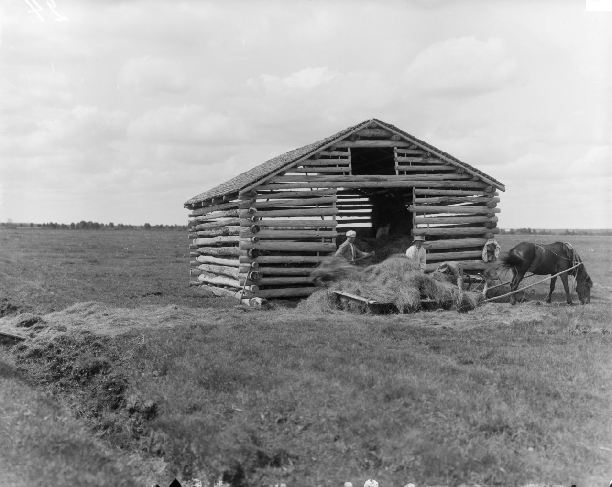
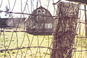

Nestled nicely in the Walamette Valley Tracey Farms offers a variety of seasonl fairs. Locally owned and operated our family has been here 2009. The holiday seasion is always an exciting time of year for us, stop by and visit any time.

Modern technology and materials have brought us a long way from our farming roots. From how we gather our crops to how we store them.

December bring a host of holiday events for the family. Check out our U-cut tree patch, don't forget to stop and see the animals. While the kids are visiting the animals come see the collection of local wears avaliable in our gift shop.